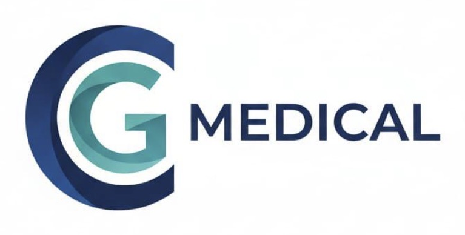
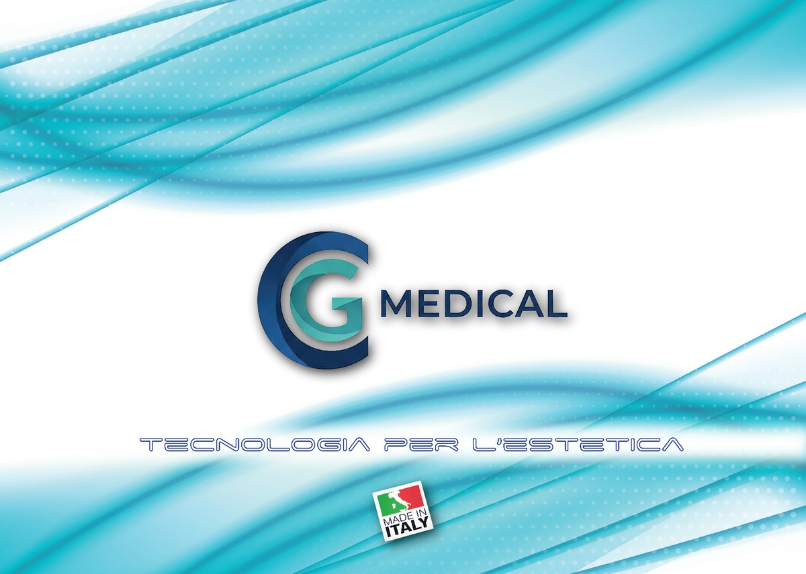
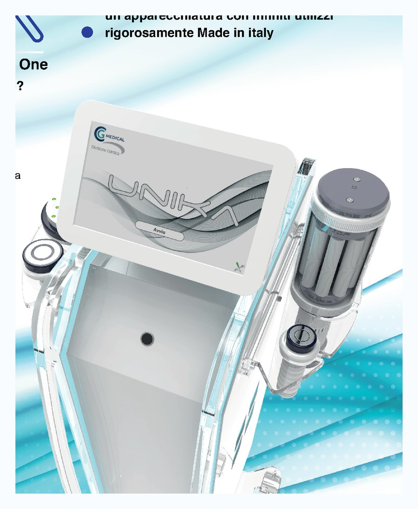
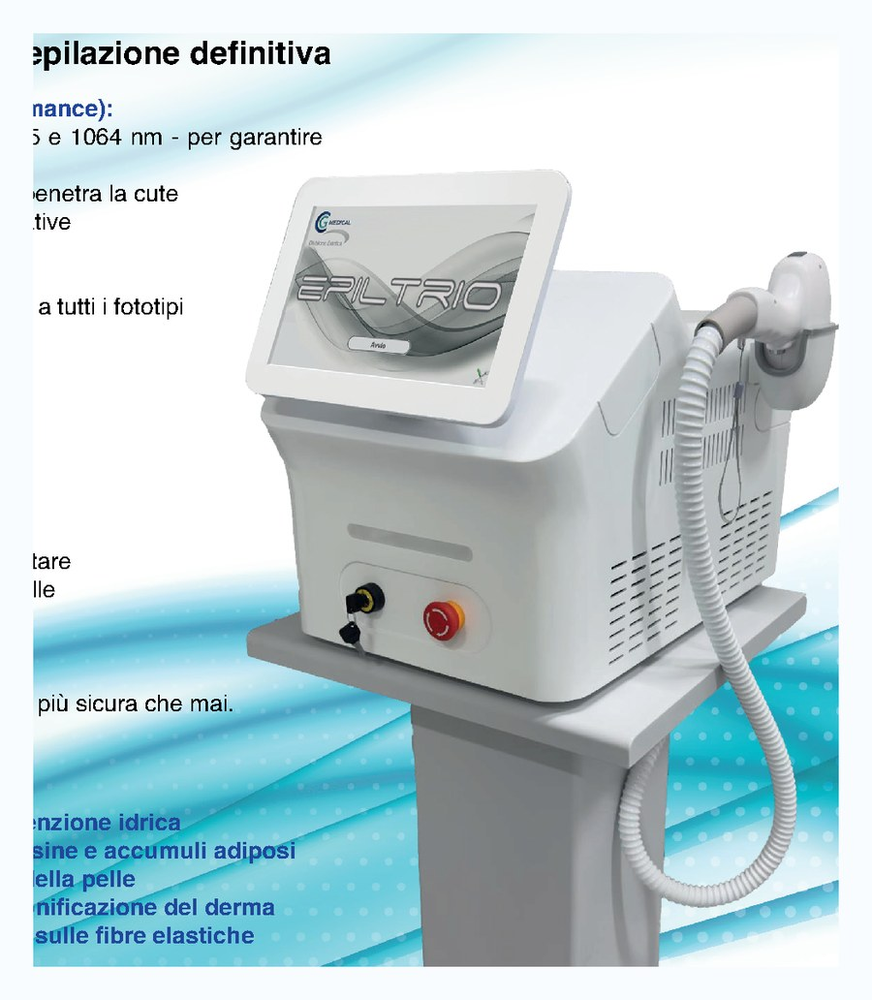
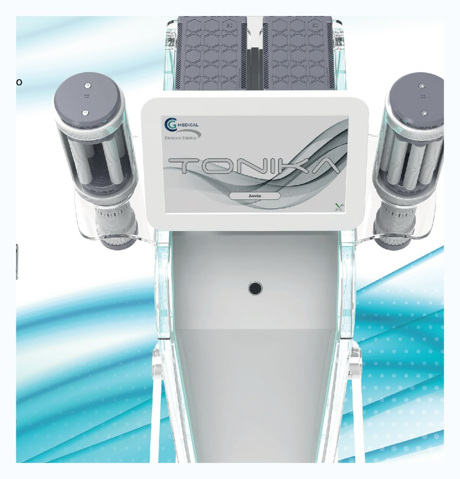
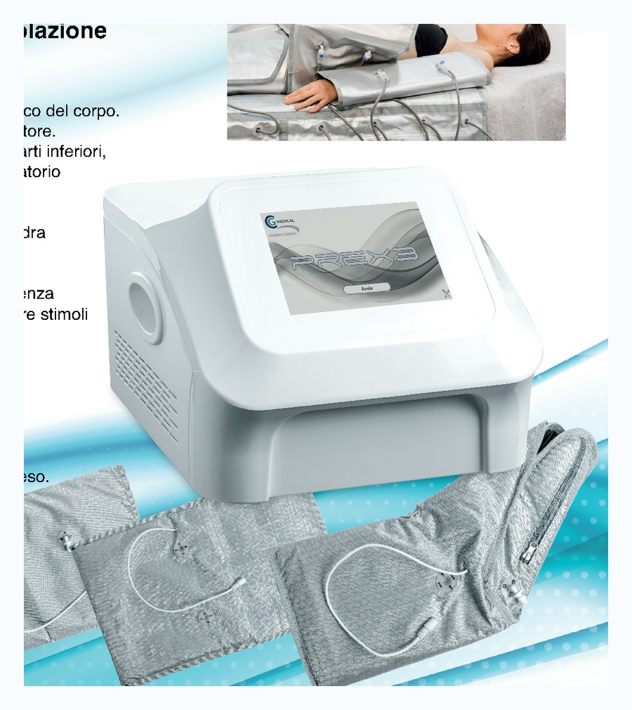
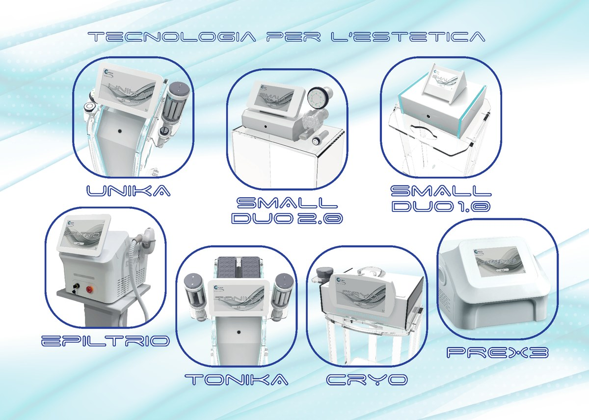
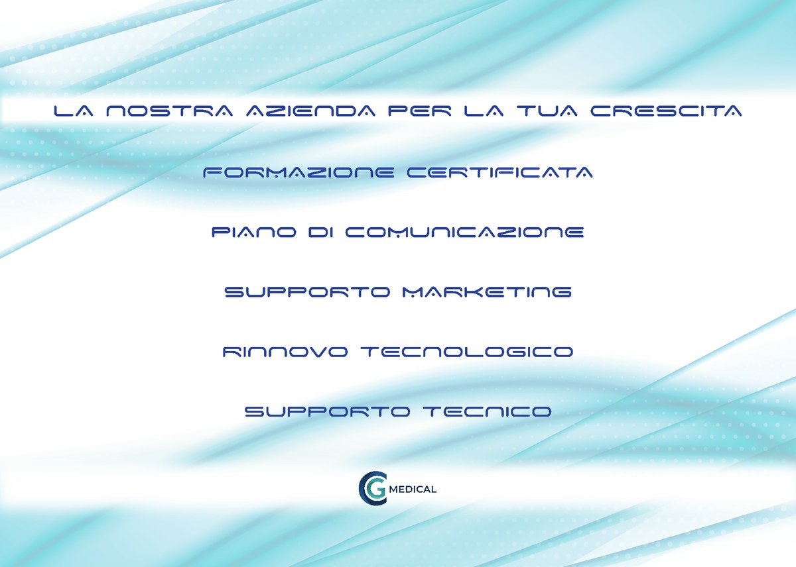

Epilazione laser
Tecnologie a diodo ad alte prestazioni, con protocolli studiati per creare percorsi continuativi e facilmente proponibili.
Tecnologia per l'estetica

Tecnologie e metodi di lavoro per centri estetici che vogliono crescere davvero.
Aiutiamo i centri estetici a introdurre tecnologie professionali, protocolli semplici e strategie commerciali concrete per aumentare i trattamenti, migliorare l'organizzazione e generare più fatturato.
Non vendiamo solo tecnologie. Costruiamo sistemi di lavoro.

Dal catalogo CG Medical
CG MEDICAL nasce da oltre vent'anni di esperienza sul campo nel mondo dell'estetica avanzata e della riabilitazione, a stretto contatto con centri estetici, studi professionali, operatori e titolari.
L'obiettivo è trasformare l'estetica avanzata in un modello organizzato, misurabile e profittevole, dove la tecnologia diventa una leva di crescita e non un costo da subire.
Cosa facciamo
Una proposta pensata per chi vuole introdurre trattamenti ad alto valore con un metodo chiaro, replicabile e sostenibile.
Tecnologie a diodo ad alte prestazioni, con protocolli studiati per creare percorsi continuativi e facilmente proponibili.
Soluzioni per cellulite, drenaggio, tonificazione, rassodamento e percorsi corpo stagionali o programmati.
Inserimento flessibile di tecnologie professionali per open day, campagne laser, campagne corpo e test prima dell'acquisto.
Supporto pratico per utilizzare, comunicare e vendere meglio i trattamenti, con un approccio commerciale concreto.
Tecnologie dal catalogo
Le tecnologie vengono proposte con consulenza, formazione e metodo di lavoro, così il centro sa come inserirle davvero nella propria offerta.
All in One - Made in Italy
Piattaforma multi-metodica modulare per trattamenti viso e corpo. Permette di configurare la soluzione in base alle esigenze del centro, scegliendo le funzionalità più utili al proprio lavoro.


Tripla lunghezza d'onda 808, 955 e 1064 nm per percorsi di epilazione progressiva, rapidi e adatti a diverse zone del corpo.

Soluzione orientata a rassodare, tonificare e scolpire, con focus su drenaggio, microcircolo e trattamento degli inestetismi.

Pressoterapia, infrarosso ed elettrostimolazione per ridurre gonfiore, rimodellare e supportare i percorsi corpo.

Gamma CG Medical
UNIKA, EPILTRIO, TONIKA, PREX3 e altre tecnologie vengono valutate in base agli obiettivi del centro, al tipo di clientela e alla strategia commerciale da costruire.
Perché CG Medical
Molti centri acquistano tecnologie ma poi le usano poco, le propongono male o non riescono a trasformarle in fatturato.
CG MEDICAL lavora su scelta della tecnologia giusta, metodo di lavoro chiaro e strategia commerciale applicabile da subito.
Noleggio e vendita
Con il noleggio CG MEDICAL puoi inserire nel tuo centro una tecnologia professionale per periodi brevi o programmati, ideale per open day, campagne corpo, laser e test prima dell'acquisto.
Valuta il noleggioPer i centri che vogliono investire stabilmente, CG MEDICAL propone soluzioni professionali selezionate, con consulenza prima dell'acquisto e affiancamento dopo l'installazione.
Scopri le soluzioniLa tecnologia da sola non fa fatturato.

Per la tua crescita
Formazione certificata
Piano di comunicazione
Supporto marketing
Rinnovo tecnologico
Supporto tecnico
Chi siamo
CG MEDICAL nasce dall'esperienza sul campo nel settore estetico, medicale e delle tecnologie professionali.
L'approccio è pratico, diretto e commerciale: scegliere la soluzione giusta, usarla bene e renderla sostenibile economicamente.
Aiutare i centri a crescere davvero, riducendo la dipendenza dall'operatore e aumentando l'efficacia dei risultati.
Contatti
Raccontaci il tuo centro, i trattamenti che vuoi sviluppare e gli obiettivi commerciali. Ti aiuteremo a individuare la soluzione più adatta.
Richiedi una consulenza gratuita